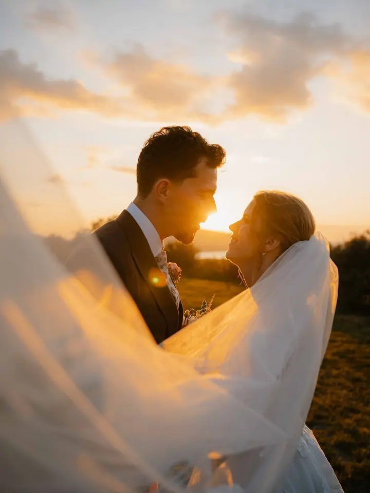
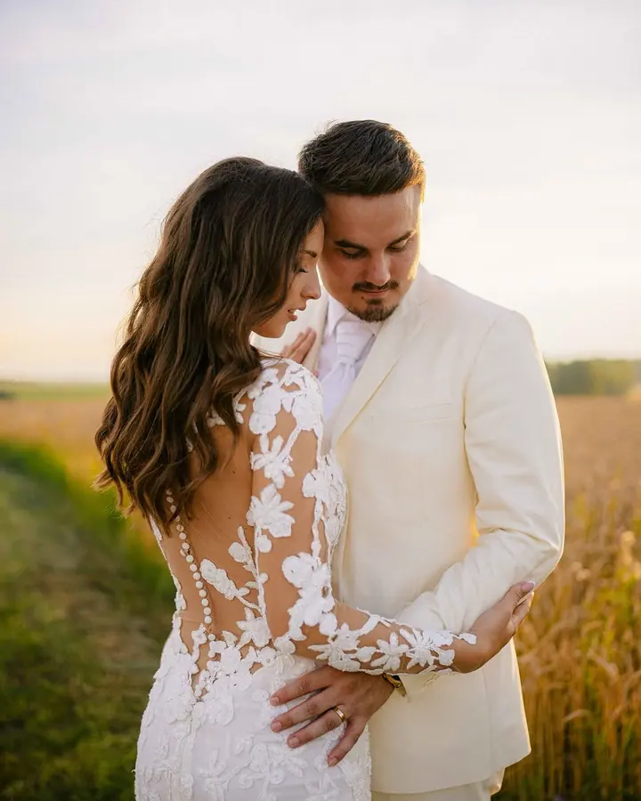
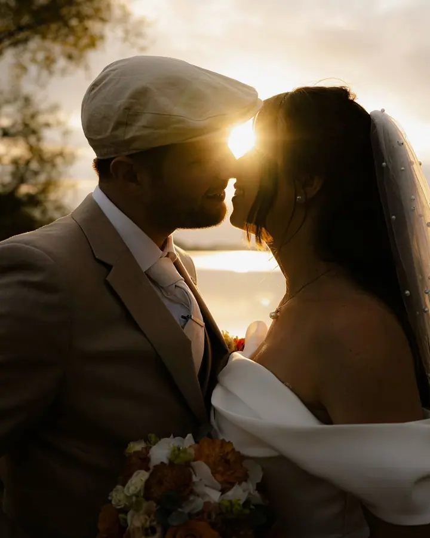
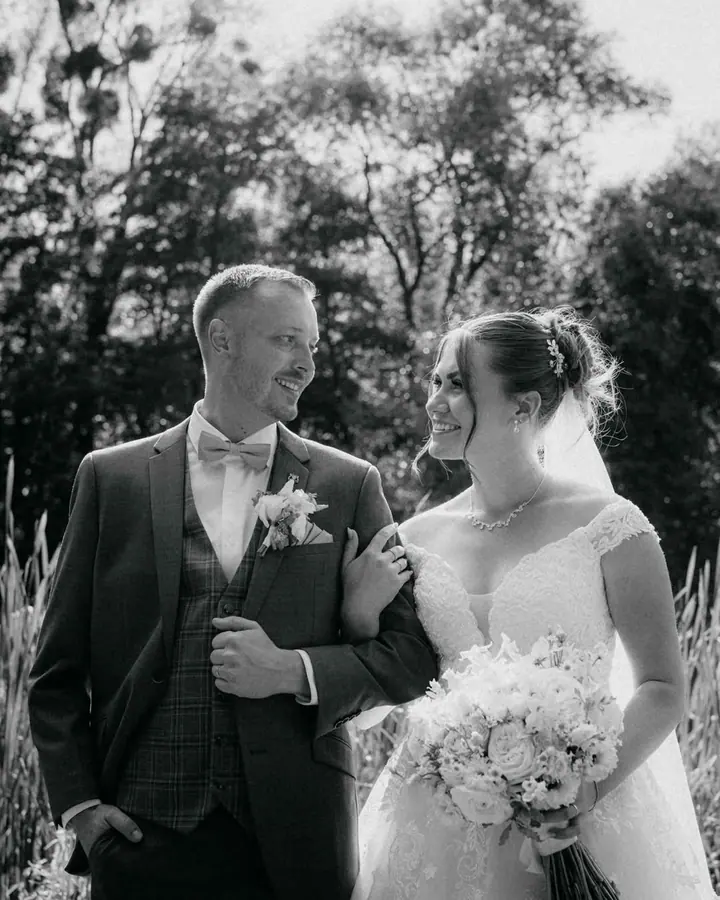

jedna
Svatební fotografování
Fotím celý den, od ranních příprav až po večerní zábavu a prskavky. Záleží mi na profesionalitě, empatii a kvalitě výsledných fotografií.

Svatební a rodinný fotograf a kameraman · Celá Morava, Čechy

Jmenuji se Vojtěch Doležal a fotím svatby, rodiny i firmy po celé Moravě, občas i v Čechách. Svatby jsou součástí mého života už od roku 2016 a pořád mě baví stejně jako na začátku.
Více o mně
Co fotím
jedna
Fotím celý den, od ranních příprav až po večerní zábavu a prskavky. Záleží mi na profesionalitě, empatii a kvalitě výsledných fotografií.
dvě
Nechte se konečně vyfotit společně s nejbližšími. Rodinné focení je zábava a krásná vzpomínka zároveň. Fotím také páry a těhotenské focení.
Firemní portréty, produkty i firemní akce, které reprezentují vaši značku. Fotím také nemovitosti a s dronem natáčím akce i reklamu.
Automatická fotobudka na svatbu, ples, firemní akci nebo oslavu. Hosté se vyfotí a během pár minut si odnesou vytištěnou fotku jako dárek.
Celý den s vámi, od příprav až po prskavky.

Za objektivem
Svatby fotím od roku 2016 a každý rok mi přináší nové zážitky i cenné zkušenosti. Být vaším fotografem pro mě znamená víc než jen zmáčknout spoušť. Jde mi o to, abyste se celý den cítili dobře a uvolněně, protože pak vznikají ty nejpřirozenější fotky.
Kromě svateb fotím rodiny, páry a těhotenské focení. Pro firmy dělám business portréty, produkty a fotky nemovitostí, natáčím video a s dronem fotím a točím akce, krajinu i reklamu. Mám rád nevšední projekty, u kterých se pořád něco nového učím.
Na svatby, plesy a firemní akce vozím i automatickou fotobudku, ze které si hosté odnesou vytištěnou fotku během pár minut. Fotím po celé Moravě, občas i v Čechách, a na blogu sepisuji svatební rady a tipy pro snoubence.
Vojtěch
Pošlete mi datum a pár slov o tom, co plánujete. Rád vám odpovím na všechny otázky.
Společně projdeme harmonogram, místo i vaše představy, abyste věděli, co vás čeká, a mohli se na focení těšit.
Jsem s vámi 10 hodin, od ranních příprav až po večerní zábavu a prskavky. Pomůžu, poradím a hlavně se snažím, abyste se cítili uvolněně.
Vybrané a upravené fotografie, 600 až 1000 snímků, vám předám na dřevěném flashdisku.
Portfolio
Otázky
Celodenní svatební focení stojí v roce 2026 24 000 Kč, s pronájmem fotobudky 30 000 Kč. Doprava je za 8 Kč/km a každá další hodina navíc za 2 000 Kč.
Finální svatební portfolio obsahuje 600 až 1000 fotografií a předávám ho na dřevěném flashdisku.
Je to automatická fotobudka, ve které se hosté vyfotí a fotku si hned vytisknou. Fotky z budky dostanete navíc i v digitální podobě, nad rámec svatebního portfolia.
Fotím po celé Moravě a občas vyrazím i do Čech. Kromě fotek nabízím také video a záběry z dronu, stačí se zeptat.
Napište pár vět o tom, co si představujete. dolezalv365@gmail.com